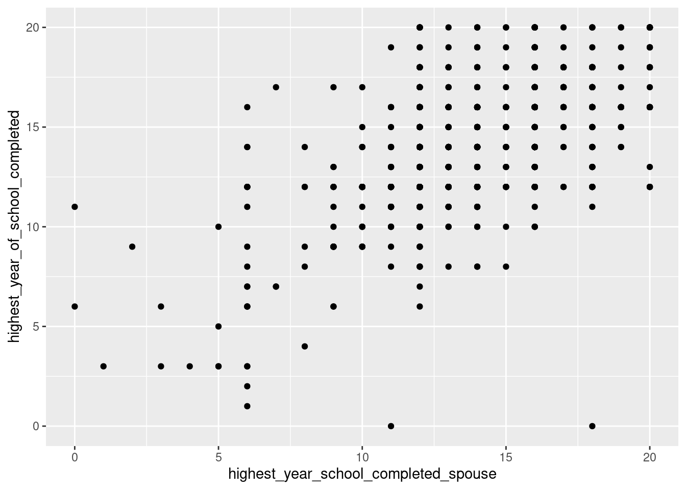

library(mosaic)
library(ggformula)R commands for SDA1
This document gives some useful R commands for the basic stats course SDA1 using the
mosaicandggformulapackages using the R formula syntax.
Credits
This document is adapted from Professor Mcnamara’s All the R you need for STAT 220 - formula.
Loading packages
Loading two packages for formula based basic statistics
Reading in data
GSS <- read.csv("GSS_clean.csv")Plotting
# one categorical
gf_bar(~marital_status, data = GSS)# two categorical
gf_bar(~marital_status, fill = ~born_in_us, data = GSS)gf_bar(~marital_status, fill = ~born_in_us, data = GSS, position = "dodge")# one numeric
gf_histogram(~highest_year_of_school_completed, data = GSS)Warning: Removed 3 rows containing non-finite values (`stat_bin()`).gf_boxplot(~highest_year_of_school_completed, data = GSS)Warning: Removed 3 rows containing non-finite values (`stat_boxplot()`).# one numeric, one categorical
gf_boxplot(highest_year_of_school_completed ~ labor_force_status, data = GSS)Warning: Removed 3 rows containing non-finite values (`stat_boxplot()`).# two numeric
gf_point(highest_year_of_school_completed ~ highest_year_school_completed_spouse,
data = GSS
)Warning: Removed 1361 rows containing missing values (`geom_point()`).
Summary statistics
# one categorical
tally(~marital_status, data = GSS, format = "proportion")marital_status
Divorced Married Never married Separated Widowed
0.1716354344 0.4250425894 0.2853492334 0.0319420784 0.0851788756
<NA>
0.0008517888 # two categorical
tally(~ marital_status | general_happiness, data = GSS, format = "proportion") general_happiness
marital_status Not too happy Pretty happy Very happy <NA>
Divorced 0.2500000000 0.1851568477 0.1098430813 0.0000000000
Married 0.1815476190 0.3856159143 0.6162624822 0.2500000000
Never married 0.4017857143 0.3129303749 0.1768901569 0.5000000000
Separated 0.0565476190 0.0306044376 0.0213980029 0.2500000000
Widowed 0.1101190476 0.0849273145 0.0741797432 0.0000000000
<NA> 0.0000000000 0.0007651109 0.0014265335 0.0000000000# one numeric
mean(~highest_year_of_school_completed, data = GSS, na.rm = TRUE)[1] 13.73177options(na.rm = TRUE) # options
median(~highest_year_of_school_completed, data = GSS)[1] 14sd(~highest_year_of_school_completed, data = GSS)[1] 2.974313range(~highest_year_of_school_completed, data = GSS)[1] 0 20IQR(~highest_year_of_school_completed, data = GSS)[1] 4fivenum(~highest_year_of_school_completed, data = GSS)[1] 0 12 14 16 20favstats(~highest_year_of_school_completed, data = GSS) # favorite statistics min Q1 median Q3 max mean sd n missing
0 12 14 16 20 13.73177 2.974313 2345 3cor(highest_year_of_school_completed ~ highest_year_school_completed_spouse,
data = GSS, use = "complete.obs"
) # correlation[1] 0.5955573Working with data
# filtering out NA values
GSS_prop <- filter(
GSS,
!is.na(should_marijuana_be_made_legal),
!is.na(self_emp_or_works_for_somebody)
)Modeling and inference
# linear model
m1 <- lm(highest_year_of_school_completed ~ highest_year_school_completed_spouse,
data = GSS
)
summary(m1)
Call:
lm(formula = highest_year_of_school_completed ~ highest_year_school_completed_spouse,
data = GSS)
Residuals:
Min 1Q Median 3Q Max
-16.5400 -1.3519 0.0242 1.4600 7.0242
Coefficients:
Estimate Std. Error t value Pr(>|t|)
(Intercept) 5.84740 0.36316 16.10 <2e-16 ***
highest_year_school_completed_spouse 0.59403 0.02553 23.27 <2e-16 ***
---
Signif. codes: 0 '***' 0.001 '**' 0.01 '*' 0.05 '.' 0.1 ' ' 1
Residual standard error: 2.462 on 985 degrees of freedom
(1361 observations deleted due to missingness)
Multiple R-squared: 0.3547, Adjusted R-squared: 0.354
F-statistic: 541.4 on 1 and 985 DF, p-value: < 2.2e-16rsquared(m1)[1] 0.3546884predict(m1,
newdata = data.frame(highest_year_school_completed_spouse = 11),
interval = "confidence"
) fit lwr upr
1 12.38178 12.17059 12.59297predict(m1,
newdata = data.frame(highest_year_school_completed_spouse = 11),
interval = "prediction"
) fit lwr upr
1 12.38178 7.546498 17.21706# bootstrapping
bootstrap_sample <- do(1) * resample(GSS)
boot <- do(1000) * mean(~highest_year_of_school_completed, data = resample(GSS))
confint(boot) name lower upper level method estimate
1 mean 13.61371 13.85108 0.95 percentile 13.73177# one proportion
prop.test(~self_emp_or_works_for_somebody,
data = GSS, success = "Self-employed", p = 0.1, alternative = "less"
)
1-sample proportions test with continuity correction
data: GSS$self_emp_or_works_for_somebody [with success = Self-employed]
X-squared = 0.1433, df = 1, p-value = 0.6475
alternative hypothesis: true p is less than 0.1
95 percent confidence interval:
0.0000000 0.1138167
sample estimates:
p
0.1026095 # two proportions
prop.test(should_marijuana_be_made_legal ~ self_emp_or_works_for_somebody,
data = GSS_prop, success = "Legal"
)
2-sample test for equality of proportions with continuity correction
data: tally(should_marijuana_be_made_legal ~ self_emp_or_works_for_somebody)
X-squared = 0.87754, df = 1, p-value = 0.3489
alternative hypothesis: two.sided
95 percent confidence interval:
-0.04100264 0.12791902
sample estimates:
prop 1 prop 2
0.6901408 0.6466827 # one mean
t.test(~highest_year_of_school_completed, data = GSS, mu = 12, alternative = "greater")
One Sample t-test
data: highest_year_of_school_completed
t = 28.195, df = 2344, p-value < 2.2e-16
alternative hypothesis: true mean is greater than 12
95 percent confidence interval:
13.6307 Inf
sample estimates:
mean of x
13.73177 # two means
t.test(highest_year_of_school_completed ~ born_in_us, data = GSS)
Welch Two Sample t-test
data: highest_year_of_school_completed by born_in_us
t = -4.8468, df = 337.79, p-value = 1.916e-06
alternative hypothesis: true difference in means between group No and group Yes is not equal to 0
95 percent confidence interval:
-1.7012965 -0.7190416
sample estimates:
mean in group No mean in group Yes
12.67774 13.88791 # Chi-square
chisq.test(tally(marital_status ~ general_happiness, data = GSS)) # independenceWarning in chisq.test(tally(marital_status ~ general_happiness, data = GSS)):
Chi-squared approximation may be incorrect
Pearson's Chi-squared test
data: tally(marital_status ~ general_happiness, data = GSS)
X-squared = 210.13, df = 15, p-value < 2.2e-16chisq.test(tally(~general_happiness, data = GSS), p = c(0.14, 0.55, 0.30, 0.01)) # GoF
Chi-squared test for given probabilities
data: tally(~general_happiness, data = GSS)
X-squared = 16.528, df = 3, p-value = 0.0008838Probability
pnorm(1.96, lower.tail = FALSE) # normal distribution function[1] 0.0249979qnorm(0.25, mean = 100, sd = 5) # normal quantile function[1] 96.62755